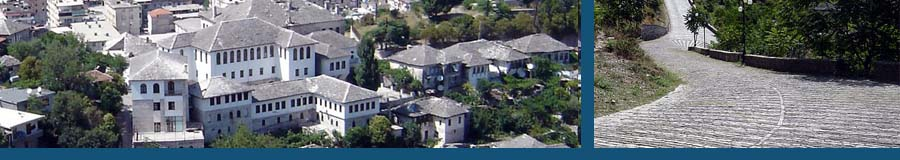

Shtëpia e Zekateve është ndërtuar në mes të vitit 1811 dhe 1812, kohë e cila përkon me përpjekjet e Ali Pashë Tepelenës, për të zmadhuar Kështjellën. Ajo u ndërtua për një nga qytetarët më të pasur, Beqir Zeko, i cili ishte një llogaritar në kohën e Ali Pashës. Ai e konceptoi shtëpinë për dy djemtë e tij, Mustafa dhe Feimi. Shtëpia e Zekatëve konsiderohet unike në të gjithë rajonin e Ballkanit, për nga madhësia dhe pasuria e saj arkitektonike. Në kohën e regjimit komunist, kjo shtëpi u shpall monument kulture, zekatët u detyruan të jetonin diku tjetër. Pas shpalljes së demokracisë, ata e morën pronën e tyre dhe gjithashtu, filluan ta mirëmbanin dhe ta rikonstruktonin, më ndihmesën e Organizatës për Zhvillim dhe Konservim të Qytetit të Gjirokastrës. Në vitin 2005, Gjirokastra hyri në UNESCO dhe duket se, Shtëpia e Zekatëve rifilloi të merrte vlerat dhe lavdinë e dikurshme...
Shtëpia e Zekatëve përbëhet nga një konstruksion i vecantë: muret prej guri, gati një metër të trashë, ka edhe ndërfutje të elementit të drurit, për t’i dhënë shtëpisë fleksibilitet në rast ndodhje të ndonjë tërmeti. Gjërat më të jashtëzakonshme në këtë vend janë harqet e larta mbi kolona, në një strukturë që quhet kamarie, e cila ka funksion estetik por edhe arkitektonik, që të mbajë peshën e dhomave sipër. Kjo shtëpi nuk ka elemente të shtëpive tipike në kohën otomane: ndarja e dhomave për meshkuj dhe për femra. Ajo ka tiparin kryesor të të gjithë shtëpive gjirokastrite, që janë catitë me rasa guri.
Po të hysh në shtëpi, do të vihet re fillimisht një dhomë me përdorim të gjithanshëm apo dhoma për miqtë. Ka një hapësirë me një seksion të lehtë, që kulmon në një cep, ku ulen persona të rëndësishëm. Kati i dytë, ka dy dhoma në të cilat rrinin vec dy degët e familjes. Secila ka një tualet të vogël dhe një nga ato madje edhe hamam që ngrohej nga tymi i oxhakut së dhomës ngjitur. Divane të ulëta janë nga të tre anët dhe dollape janë të vendosura në muret e shtëpisë. Në një fund është musandra, bashkë me një raft të madh, gati për të mbajtur rroba, dyshekë dhe gjëra të tjera fjetje.
Një kat më sipër është një hapësirë në formë galerie prej druri dhe divani i katit të tretë është tejet i madh, duke ofruar një pamje të jashtëzakonshme tërheqëse të gjithë qytetit dhe gjithë luginës. Nga përreth, muret janë të veshura me listela druri, ngjitur me një pjesë speciale prodhuar nga gëlqere e vjetër, qime dhie, e bardhë vezësh, rërë e pastër përzierë me kashtë. Dhoma më e madhe e pritjes shoqërohet edhe me dy dhoma më të vogla. Më vonë janë dhomat e verës që vazhdonin modelin e dhomave në katin poshtë.
Dhoma kryesore e pritjes është e stërmadhe dhe e realizuar me dekoracione të ndryshme, dikur ajo përdorej për rastet më të rëndësishme të tilla si dasmat apo kremtimet. Afresket e frutave luleve, që janë tipike në të ashtuquajturën “Era tulipane” në arkitekturën otomane, gjatë shekullit të XVIII, këtu janë realitet në muret e shtëpisë. Kjo i jepte një imazh simbolik kuptimit për shëndetin, pasurinë dhe vetë bollëkun e shtëpisë. Kudo të shoqërojnë elementë të kujdeshëm druri, ku ndjehet stili arkaik otoman dhe elementët karakteristikë të drurit gjendeshin përgjatë kudo mureve me tema floreale. Dritaret me forma hënore me xhamat shumëngjyrëshe thuhet se vijnë nga Venediku.

